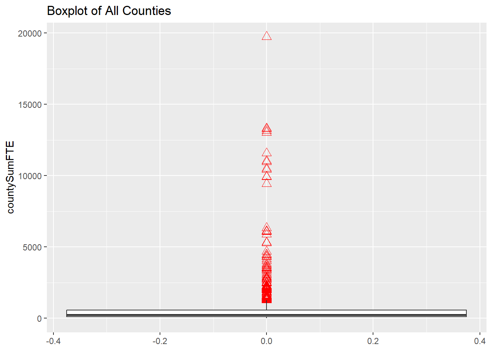

dfPubSchool <- tibble(read.csv(file = "../posts/_data/Public_School_Characteristics_2017-18.csv")) # read in data
psrows <- prettyNum(nrow(dfPubSchool), big.mark = ",", scientific = FALSE) # Apply comma-separated format
pscols <- prettyNum(ncol(dfPubSchool), big.mark = ",", scientific = FALSE)
numtoprint <- 12Challenge 5
challenge_5
public_schools
Introduction to Visualization
Challenge Overview
Today’s challenge is to:
- read in a data set and describe it
- tidy data (as needed, including sanity checks)
- mutate variables as needed (including sanity checks)
- create at least two univariate visualizations
- try to make them “publication” ready
- Explain why you choose the specific graph type
- Create at least one bivariate visualization
- try to make them “publication” ready
- Explain why you choose the specific graph type
R Graph Gallery is a good starting point for thinking about what information is conveyed in standard graph types, and includes example R code.
Read in data
The school source CSV file is a relatively tidy table.
Briefly describe the data
The public school characteristics (2017-18) data set includes 100,729 observations under 79 variables. Each observation is a school. Variables show information about public schools in every US state and county. Information includes numeric variables for enrollment in each grade, employment (expressed as full-time equivalent, FTE), demographics, and school status in terms of grade level, charter, magnet, and other categories. The data is likely the product of routine inventory collected by the Department of Education.
Here are the first 12 rows from the data.
dfPubSchool[1:numtoprint,]# A tibble: 12 × 79
X Y OBJECTID NCESSCH NMCNTY SURVY…¹ STABR LEAID ST_LE…² LEA_N…³
<dbl> <dbl> <int> <dbl> <chr> <chr> <chr> <int> <chr> <chr>
1 -149. 61.6 1 20051000480 Matanu… 2017-2… AK 200510 AK-33 Matanu…
2 -157. 71.3 2 20061000470 North … 2017-2… AK 200610 AK-36 North …
3 -151. 60.5 3 20039000448 Kenai … 2017-2… AK 200390 AK-24 Kenai …
4 -151. 60.6 4 20039000463 Kenai … 2017-2… AK 200390 AK-24 Kenai …
5 -151. 60.6 5 20039000513 Kenai … 2017-2… AK 200390 AK-24 Kenai …
6 -133. 56.1 6 20070000526 Prince… 2017-2… AK 200700 AK-44 Southe…
7 -135. 57.5 7 20073000477 Hoonah… 2017-2… AK 200730 AK-09 Chatha…
8 -149. 63.9 8 20077000447 Denali… 2017-2… AK 200770 AK-02 Denali…
9 -166. 54.1 9 20000700004 Aleuti… 2017-2… AK 200007 AK-56 Aleuti…
10 -163. 54.9 10 20000700007 Aleuti… 2017-2… AK 200007 AK-56 Aleuti…
11 -162. 55.0 11 20000700177 Aleuti… 2017-2… AK 200007 AK-56 Aleuti…
12 -160. 55.4 12 20000700461 Aleuti… 2017-2… AK 200007 AK-56 Aleuti…
# … with 69 more variables: SCH_NAME <chr>, LSTREET1 <chr>, LSTREET2 <chr>,
# LSTREET3 <chr>, LCITY <chr>, LSTATE <chr>, LZIP <int>, LZIP4 <int>,
# PHONE <chr>, GSLO <chr>, GSHI <chr>, VIRTUAL <chr>, TOTFRL <int>,
# FRELCH <int>, REDLCH <int>, PK <int>, KG <int>, G01 <int>, G02 <int>,
# G03 <int>, G04 <int>, G05 <int>, G06 <int>, G07 <int>, G08 <int>,
# G09 <int>, G10 <int>, G11 <int>, G12 <int>, G13 <int>, TOTAL <int>,
# MEMBER <int>, AM <int>, HI <int>, BL <int>, WH <int>, HP <int>, TR <int>, …Tidy Data (as needed)
I’m interested in learning more about public school employment. It doesn’t take much to tidy this data for that question, because both Total enrollment and FTE are single variables in the original data.
dfPubSchoolSub <- dfPubSchool %>%
subset(select =
c(NMCNTY, TOTAL, FTE, CHARTER_TEXT)) %>%
mutate(CHARTER_TEXT = factor(CHARTER_TEXT)) %>%
print(n = numtoprint)# A tibble: 100,729 × 4
NMCNTY TOTAL FTE CHARTER_TEXT
<chr> <int> <dbl> <fct>
1 Matanuska-Susitna Borough 447 24.9 No
2 North Slope Borough 30 3 No
3 Kenai Peninsula Borough 167 10.4 Yes
4 Kenai Peninsula Borough 260 16.8 Yes
5 Kenai Peninsula Borough 5 0.670 No
6 Prince of Wales-Hyder Census Area 18 1.90 No
7 Hoonah-Angoon Census Area 11 0 No
8 Denali Borough 737 5.79 No
9 Aleutians East Borough 13 1.96 No
10 Aleutians East Borough 6 1.39 No
11 Aleutians East Borough 94 12 No
12 Aleutians East Borough 120 12.9 No
# … with 100,717 more rowsThe summary shows a list of schools with FTE outliers on the upper end.
#define function to calculate mode
find_mode <- function(x) {
u <- unique(x[!is.na(x)]) # unique list as an index, without NA
tab <- tabulate(match(x[!is.na(x)], u)) # count how many times each index member occurs
u[tab == max(tab)] # the max occurrence is the mode
mean(u) # return mean in case the data is multimodal
}
dfPubSchoolSub %>%
summarise(
meanFTE = mean(FTE, na.rm = TRUE),
modeFTE = find_mode(FTE),
minFTE = fivenum(FTE, na.rm = TRUE)[1],
lowHingeFTE = fivenum(FTE, na.rm = TRUE)[2],
medianFTE = median(FTE, na.rm = TRUE),
upHingeFTE = fivenum(FTE, na.rm = TRUE)[4],
maxFTE = fivenum(FTE, na.rm = TRUE)[5],
count = n()
) # A tibble: 1 × 8
meanFTE modeFTE minFTE lowHingeFTE medianFTE upHingeFTE maxFTE count
<dbl> <dbl> <dbl> <dbl> <dbl> <dbl> <dbl> <int>
1 32.6 59.9 0 17 27.6 41 1419 100729dfPubSchoolSubFTE <- subset(dfPubSchoolSub, select = c(NMCNTY, FTE)) %>%
group_by(NMCNTY) %>%
summarise(countySumFTE = sum(FTE), .groups = 'drop')
fteRows <- nrow(dfPubSchoolSubFTE) Grouping by county reduces the data set to 1959 observations. This is one observation for each county. Sanity check: The source data set has 1959 distinct counties. We have a match.
The summary and boxplot visualization of FTE summed by county is as follows:
dfPubSchoolSubFTE %>%
summarise(
meanCFTE = mean(countySumFTE, na.rm = TRUE),
modeCFTE = find_mode(countySumFTE),
minCFTE = fivenum(countySumFTE, na.rm = TRUE)[1],
lowHingeCFTE = fivenum(countySumFTE, na.rm = TRUE)[2],
medianCFTE = median(countySumFTE, na.rm = TRUE),
upHingeCFTE = fivenum(countySumFTE, na.rm = TRUE)[4],
maxCFTE = fivenum(countySumFTE, na.rm = TRUE)[5],
count = n()
) # A tibble: 1 × 8
meanCFTE modeCFTE minCFTE lowHingeCFTE medianCFTE upHingeCFTE maxCFTE count
<dbl> <dbl> <dbl> <dbl> <dbl> <dbl> <dbl> <int>
1 645. 648. 3 118. 251. 575. 19743. 1959dfPubSchoolSubFTE %>%
ggplot(aes(x = countySumFTE)) +
geom_boxplot(outlier.colour = "red",
outlier.shape = 2,
outlier.size = 3) +
coord_flip() +
ggtitle("Boxplot of All Counties")
dfPubSchoolSubFTE %>%
filter(countySumFTE <= 2000) %>%
ggplot(aes(x = countySumFTE)) +
geom_boxplot(outlier.colour = "red",
outlier.shape = 2,
outlier.size = 3) +
coord_flip() +
ggtitle("Boxplot of Counties with Fewer than 2000 FTE")dfPubSchoolSubFTE %>%
filter(countySumFTE > 2000) %>%
ggplot(aes(x = countySumFTE)) +
geom_boxplot(outlier.colour = "red",
outlier.shape = 2,
outlier.size = 3) +
coord_flip() +
ggtitle("Boxplot of Counties with More than 2000 FTE")Univariate Visualizations
I use two histograms to group counties by number of public school FTE employees.
The first histogram shows all counties with total FTE less than or equal to 2000, in bins of width 10.
dfPubSchoolSubFTE %>%
filter(countySumFTE <= 2000) %>%
ggplot(aes(countySumFTE)) +
geom_histogram(binwidth = 10) +
ggtitle("Histogram of Counties with 2000 or Fewer FTE")The second histogram shows all counties with total FTE greater than 2000, in bins of width 100.
dfPubSchoolSubFTE %>%
filter(countySumFTE > 2000) %>%
ggplot(aes(x = countySumFTE)) +
geom_histogram(binwidth = 100) +
ggtitle("Histogram of Counties with More than 2000 FTE")Bivariate Visualization(s)
dfPubSchoolSubFTECharter <- subset(dfPubSchoolSub, select = c(NMCNTY, TOTAL, FTE, CHARTER_TEXT)) %>%
group_by(NMCNTY, CHARTER_TEXT) %>%
summarise(countyMeanEnr = mean(TOTAL), countyMeanFTE = mean(FTE), .groups = 'drop')
fteCharterRows <- nrow(dfPubSchoolSubFTECharter)Grouping by county and charter produces a data set with 2860 observations. Comparative boxplots show the difference mean staffing between charter and non-charter schools (as well as schools with a “not applicable” charter status, which is confusing and makes me want to find the data dictionary.)
dfPubSchoolSubFTECharter %>%
ggplot(aes(x = countyMeanFTE, y = CHARTER_TEXT)) +
geom_boxplot(outlier.colour = "red",
outlier.shape = 2,
outlier.size = 3) +
coord_flip() +
ggtitle("Boxplot of Mean FTE by County and by Charter Status")This scatterplot uses color to separate charters from non-charters. To zoom in on a smaller subset, the filter function looks at counties with mean enrollment of 200 students or less, and it omits schools without an applicable charter status.
This scatterplot shows how charters have greater dispersion than non-charters in this enrollment segment. The linear trendlines support the observation that non-charters employ more staff.
dfPubSchoolSubFTECharter %>%
filter(countyMeanEnr <= 200, CHARTER_TEXT != "Not Applicable") %>%
ggplot(aes(x = countyMeanEnr, y = countyMeanFTE, color = factor(CHARTER_TEXT))) +
geom_point() +
geom_smooth(method = "lm", fill = NA) +
labs(title = "Total Enrollment and FTE by County and by Charter Status",
subtitle = "Mean county enrollment 200 or less",
caption = "Trendline: linear")